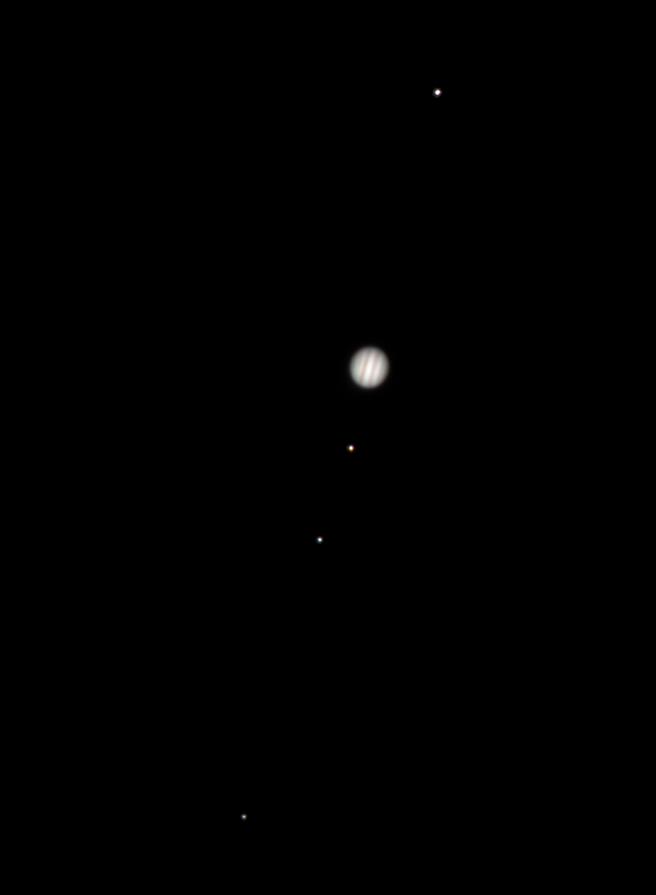
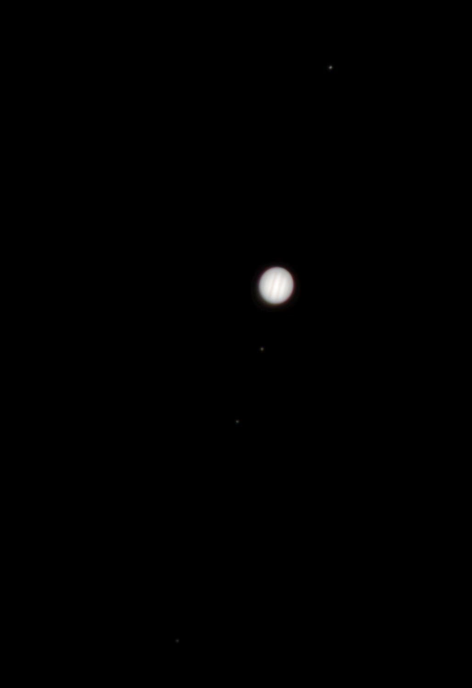
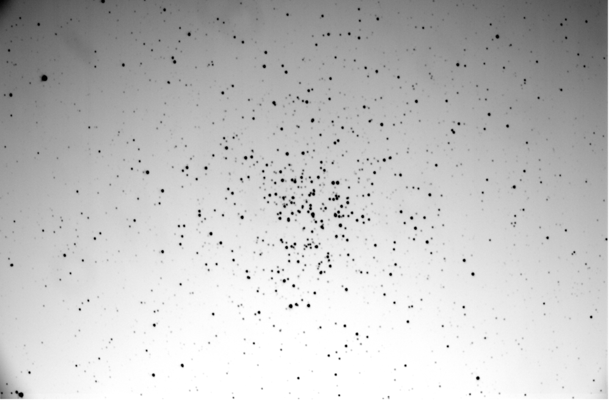
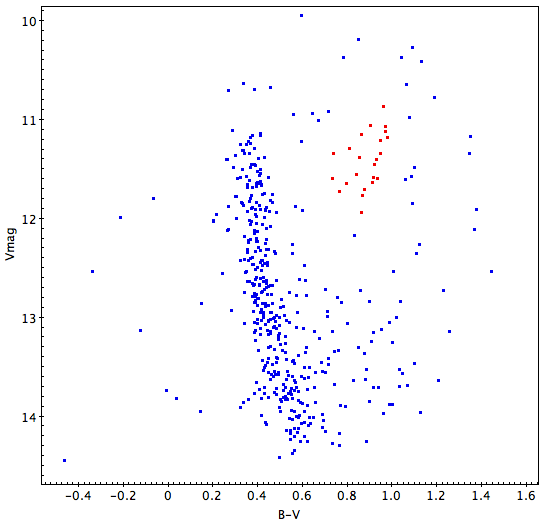
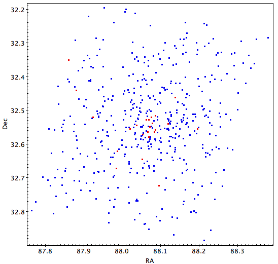
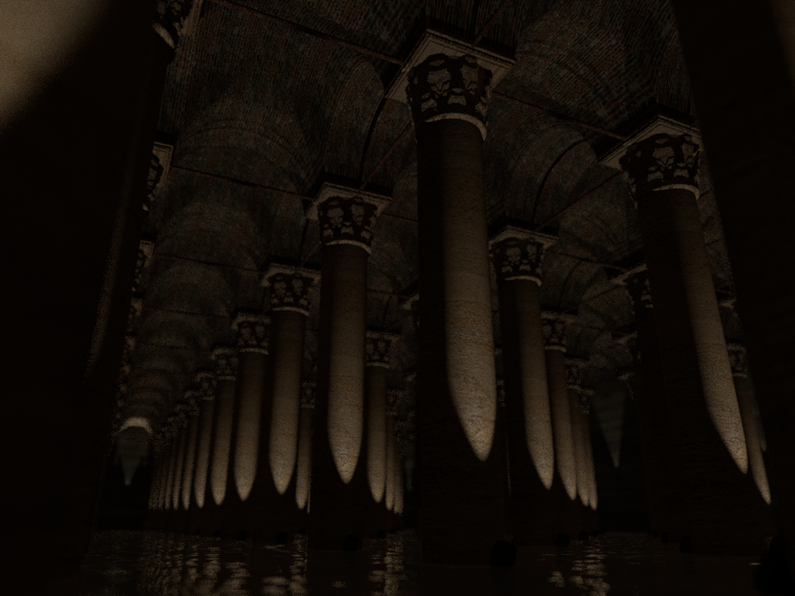
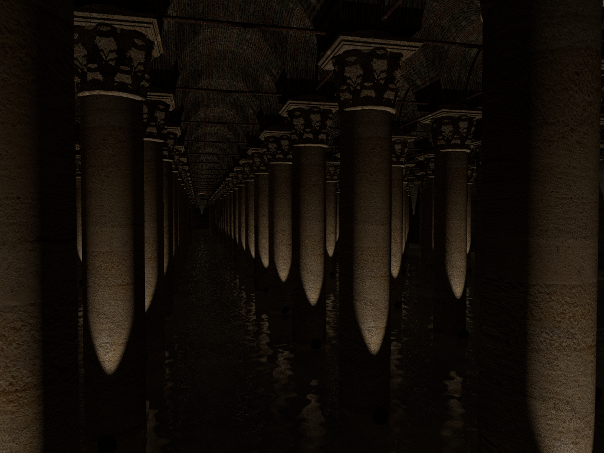
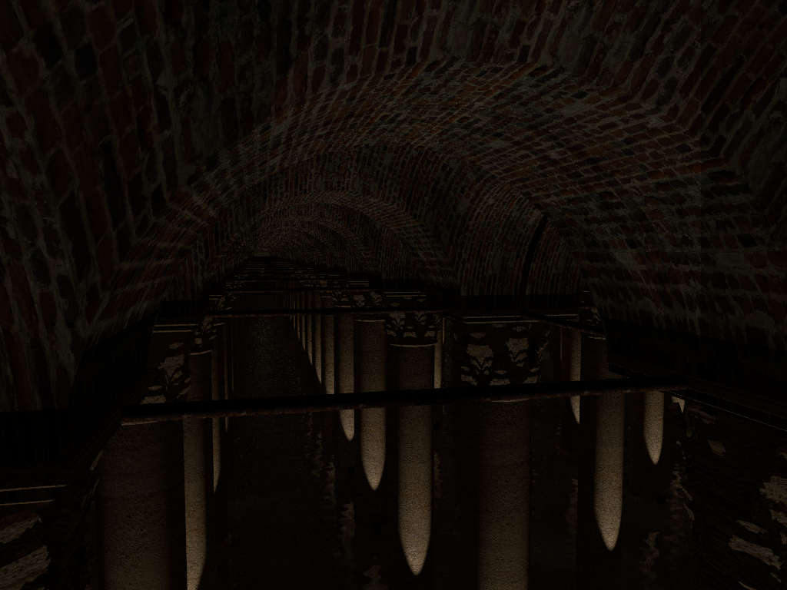
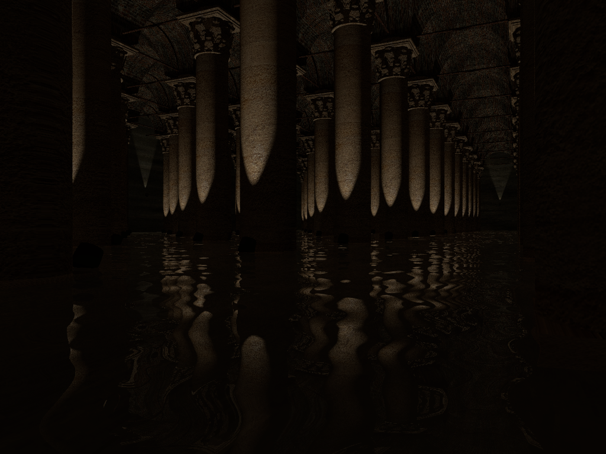
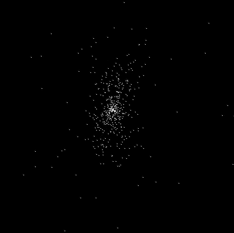

Spring 2016
Advanced Computer Graphics
Raytracer in C++

In this class, each student created their own raytracer to render images in one of three offered languages. I chose to write mine in C++ as up to this point everything I had done on C++ had been mostly self-taught.
Advanced Observing Projects
We had three projects we to complete in this class: two smaller projects in the first half of term, and one larger project in the second half. Potential projects ranged from taking and creating beautiful images of objects in space to in depth research on a topic. Students were required to write up full reports on each project and choose one to present during the Science and Math poster session.
RGB Image of Jupiter


Abstract: Two images of Jupiter were created using 9 total images with 3 images each taken in R, G, and B filters. Color processing and image alignment was done in AstroImageJ. In the final images, two main dark stripes can be seen on Jupiter as well as some lighter stripes. Additionally, the four Galilean moons can be seen, with thee of them on one side and the fourth one on the other. I created two images using two different methods - the first method created a clearer picture overall especially of the planet while second method resulted in a fuzzy image of Jupiter and with faint moons.
Full writeup
Color Magnitude Diagram of M37



Abstract: Images of M37 were taken with CCD on a 16 inch telescope on Bennington College campus. Image correction was done and two final images, one in a blue filter and one in green were created. Aperture photometry was preformed on these two images with 590 stars in the field being identified, analyzed, and plotted. The resulting Color-Magnitude Diagram has a very clear main sequence, although many of the stars in the image don’t seem to fall it, or any of the other expected branches. However, there is a clump of stars to the upper right of the main sequence around where the red giant branch is expected, although it is lower than anticipated.
Full writeup |
Poster
Observation of Kepler Binary Stars
Abstract: The Kepler mission is set to find planets orbiting stars outside our solar system. In 2011, the Kepler mission released a catalog of all the eclipsing binaries that they had found so far. Using this catalog, I sorted the binaries by the depth of its primary eclipse with the idea that a deeper eclipse would result in more notable difference in magnitude. I then wrote a script in Python which would calculate the time and date of the next eclipse for each system. As so many of the systems had periods of less than 1 day, there would often be several eclipses happening in one hour. Observations were made with an Optec SSP-3 photometer on a 16 inch telescope at the Stickney Observatory on the Bennington College Campus. For the first two nights of data collecting, I only observed the counts given from the star. On the third night, I recorded a count of the night sky with no objects in it. No good results were obtained due to several reasons.
Full writeup
Fall 2015
Scripting for Computer Graphics




Each student spent the second half of the term working on their own, final scene in POV-Ray. I chose to recreate the Basilica Cistern in Istanbul, Turkey for my final. Using measurements I found online, I did my best to make everything to scale. Everything was created in POV-Ray with the exception of the column capitals. For those, I modeled them using Blender and converted the final file to POV-Ray format.
Spring 2015
Astrogeology
55 Cnc
For the final, each student chose an exo-soalr system to write a final report on. The form that the final could take was very open ended. Students could do anything from a hard science fiction short story to a scientific report. I took the opportunity to expand on my final for Web As Artistic Platform by creating a similar website, but for the 55 Cnc system rather than our solar system.
Website
Fall 2014
Data Structures in C
Brute-force N-body simulation

For a final project, I wanted to create an implementation of the Barnes-Hut algorithm for the N-body problem. Unfortunately, I did not have time to finish this, but I was able to successfully implement it via brute force. This simulation was done in only two dimensions, and the gif above shows the results with 500 bodies. Although the course itself was taught in C, I took the time to learn some C++ for this project.
Spring 2014
How to Build a Radio Telescope
In this class, we built a radio telescope following a guide from MIT Haystack. We were able to successfully create the telescope itself and mount it on the roof of the science building as well as make the code from Haystack work on our computers and telescope.
Operating Systems: RamuntOS
We created a simple operating system, RumuntOS, for a Raspberry Pi written in C and ARM Assembly. My mine focus in this group project was to create the process tree for the operating system, which was implemented as a b-tree written in C.
Fall 2013
Distributed Systems: Google File System implementation
As a group, we created an implementation of the Google File System (GFS) written in Python and distributed across multiple Raspberry Pis. The final product allowed for users to upload and download files, which would be stored in redundant parts across various servers.
Fall 2012
Web As Artistic Platform
Personal Site
As a part of Web As Artistic Platform, students were required to make a personal site - a site which would act as a 'homepage' for us to put all of our work for the term onto, as well as any other work we wanted.
Website
NOLI ME
This site came about through a misunderstanding of an assignment...
I was inspired by jodi to play around with hiding messages within the site, both on the webpage itself and in the source code.
Website
The Final Frontier?
For my final project for Web As Artistic Platform, I decided to create a site which would give information about the solar system - specifically to encourage space exploration.
This is a project I am planning on continuing working on, and did so a bit in my final project for Astrogeolgy in Spring, 2015.
Website